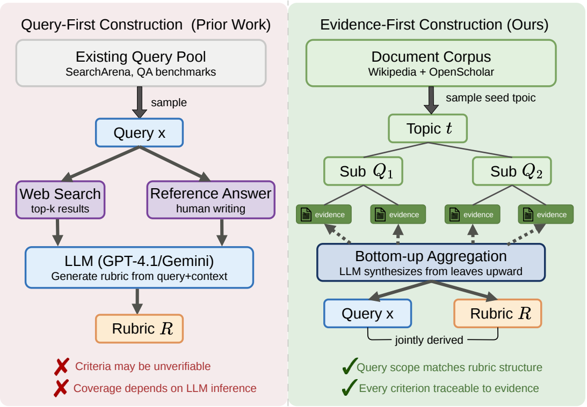
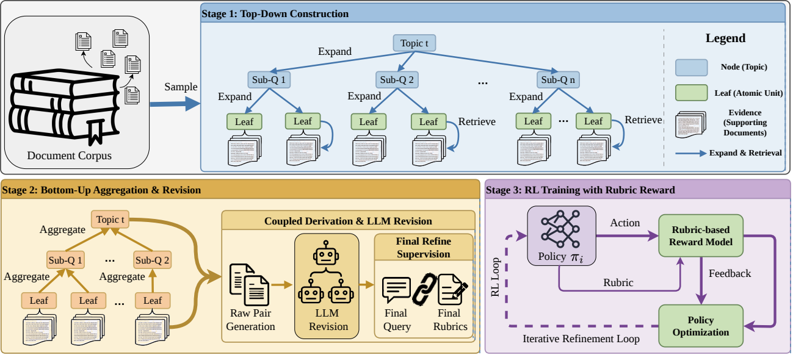
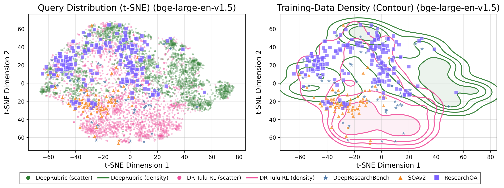
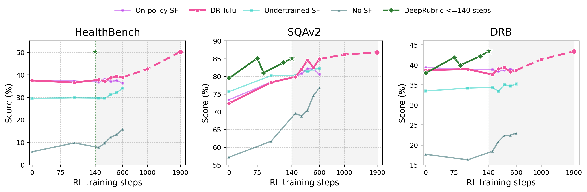

EMNLP 2026Main Conference
DeepRubric
Evidence-Tree Rubric Supervision for Efficient
Reinforcement Learning of Deep Research Agents
01 Introduction
Overview
DeepRubric generates research queries and evaluation rubrics from evidence retrieved from Wikipedia and OpenScholar.
An evidence tree organizes retrieved evidence into sub-questions and atomic evaluation targets.
The selected leaves provide the basis for factual and logical rubric criteria. The research query and its rubric are then generated together.
Read the full paper

Research summary
DeepRubric builds query-rubric supervision from retrieved evidence before reinforcement learning. Instead of starting from a user query and asking a model to invent a rubric, DeepRubric first constructs evidence trees from local Wikipedia and OpenScholar corpora, then synthesizes aligned research queries and grounded factual/logical rubric criteria from selected evidence leaves.
The release exposes the full reproduction loop: deploy retrievers, construct evidence trees, verify KEEP/REVISE/DROP samples, convert verified data to verl-tool parquet format, and start GRPO training for a tool-using deep research agent.
02 Method
Method Overview
The pipeline consists of evidence-tree construction, query-rubric synthesis, and GRPO training.
- 01 / CONSTRUCT
Build evidence trees
Expand a seed topic into sub-questions and retrieve supporting evidence for the atomic leaves.
- 02 / SYNTHESIZE
Align queries and rubrics
Aggregate from the leaves upward, then verify, revise, or drop the generated supervision.
- 03 / OPTIMIZE
Train with rubric rewards
Use the grounded criteria as GRPO rewards for a tool-using deep research agent.


Training Data
Wikipedia + OpenScholar
- Evidence trees generated
- 9,838
- Query-rubric pairs retained
- 9,064
- Criteria per example
- 7.0
- Selected leaves per example
- 5.0
Training query distribution


03 Evaluation
Experimental Results
SQAv2, ResearchQA, and DRB results for DeepRubric-8B and the comparison models.
68.3 average score
DeepRubric-8B at 140 GRPO steps.
| Model | SQAv2 | ResearchQA | DRB | Average | RL GPU-hours |
|---|---|---|---|---|---|
| Qwen3-8B + SearchBase model | 57.2 | 46.3 | 18.2 | 40.6 | 0 |
| DR Tulu-8B1,900 steps | 86.8 | 74.3 | 43.4 | 68.2 | ~9,700 |
| DeepRubric-8B140 steps | 86.0 | 75.2 | 43.6 | 68.3 | ~750 |
Results from the paper. RL compute is reported in approximate GPU-hours.


04 Resources
Code, Model & Dataset
Source code, DeepRubric-8B weights, and the training dataset.
Source code
Retrievers, evidence construction, data conversion, and GRPO training.
DeepRubric-Code Hugging FaceDeepRubric-8B
8B model trained with rubric-based GRPO.
Model weights Hugging FaceTraining dataset
Verified research queries with factual and logical rubric criteria.
Query-rubric pairsRetriever setup, data construction, and training configurations.
Reproduction guide05 Reference
Citation
arXiv preprint arXiv:2606.17029
Accepted to EMNLP 2026
Main Conference
@misc{zhu2026deeprubricevidencetreerubricsupervision,
title = {{DeepRubric}: Evidence-Tree Rubric Supervision for Efficient Reinforcement Learning of Deep Research Agents},
author = {Minghang Zhu and Chuyang Wei and Junhao Xu and Yilin Cheng and Zhumin Chen and Jiyan He},
year = {2026},
eprint = {2606.17029},
archivePrefix = {arXiv},
primaryClass = {cs.CL},
url = {https://arxiv.org/abs/2606.17029}
}